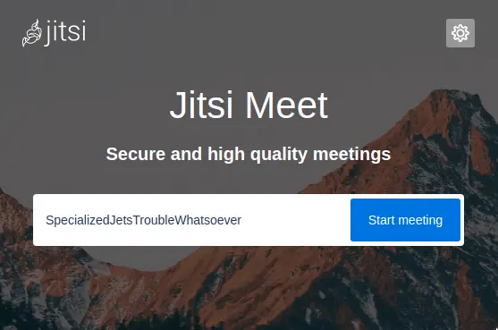

Jitsi is a set of open-source projects that allows you to easily build and deploy secure video conferencing solutions.
Is really easy to install, and also a really good private, federated and libre alternative to Zoom or other video conferencing software. You can create calls just by typing the URL, and loging-in is not necessary.
Dependencies and Installation
First, install some dependencies:
apt install gpg apt-transport-https nginx python3-certbot-nginxJitsi has its own package repository, so let's add it.
curl https://download.jitsi.org/jitsi-key.gpg.key | gpg --dearmor > /usr/share/keyrings/jitsi-keyring.gpg
echo 'deb [signed-by=/usr/share/keyrings/jitsi-keyring.gpg] https://download.jitsi.org stable/' > /etc/apt/sources.list.d/jitsi-stable.list
apt update -y
Ok. So now we can install Jitsi, but before we do that, let's setup the firewall ufw, in case you
have it enabled, and the SSL certificate.
Enable Required Ports
If you are using ufw or another firewall, there are several ports we need to ensure are open:
ufw allow 80/tcp
ufw allow 443/tcp
ufw allow 10000/udp
ufw allow 3478/udp
ufw allow 5349/tcp
ufw enableFor your information, these allow the following:
- 80 TCP – Certbot.
- 443 TCP – General access to Jitsi Meet.
- 10000 UDP – General network video/audio communications.
- 3478 UDP – Quering the stun server (coturn, optional, needs config.js change to enable it).
- 5349 TCP – Fallback network video/audio communications over TCP (when UDP is blocked for example), served by coturn.
SSL certificate
I'll be using certbot and Nginx to generate a certificate for the Jitsi subdomain to allow encrypted connections.
certbot --nginx certonly -d meet.example.orgWe will not create an Nginx config file for Jitsi because the Jitsi package we will be installing will do that automatically.
Installation
To begin the installation process, just run:
apt install jitsi-meet
It will ask you for your hostname; there you'll need to input the subdomain you have just added to Nginx, like
meet.example.org.
For the SSL certificate, choose I want to use my own certificate.
When it ask you for the certification key and cert files, input
/etc/letsencrypt/live/meet.example.org/privkey.pem and
/etc/letsencrypt/live/meet.example.org/fullchain.pem respectively.
Using Jitsi
Jitsi can be used in a browser by then just going to meet.example.org.
Note that there are also Jitsi clients for all major platforms:
- Desktop (Windows, MacOS, GNU/Linux)
- Android (F-Droid and Google Play)
- iPhone/iOS
When using a Jitsi app for the first time, remember to go to the "Settings" menu and change your server name to the Jitsi site you just created.
When you create a video chatroom, its address will appear as meet.example.org/yourvideochatname and can be shared as such.
Security
By default, anyone who has access to meet.example.org will be able to create a chatroom. You probably don't want that, so you'll need to set up some authentication. The simplest option is to handle authentication through the local Prosody user database.
Prosody configuration
First, we need to enable password authentication in Prosody. Edit /etc/prosody/conf.avail/meet.example.org.cfg.lua, and locate this block:
VirtualHost "meet.example.org"
authentication = "anonymous""anonymous" to "internal_hashed".
Then, to enable guests to login and join your chatrooms, add the following block after the one you just edited:
VirtualHost "guest.meet.example.org"
authentication = "anonymous"
c2s_require_encryption = falseJitsi Meet configuration
Next, in /etc/jitsi/meet/meet.example.org-config.js, uncomment the following line:
var config = {
hosts: {
// anonymousdomain: 'guest.jitsi-meet.example.com',
},
}
'guest.jitsi-meet.example.com' to 'guest.meet.example.org'.
Jicofo configuration
Finally, we configure Jicofo to only allow the creation of conferences when the request is coming from an authenticated user. To do so, add the following authentication section to /etc/jitsi/jicofo/jicofo.conf:
jicofo {
authentication: {
enabled: true
type: XMPP
login-url: meet.example.org
}Create users in Prosody and restart the services
You now need to register some users in Prosody, you can do so manually using prosodyctl:
prosodyctl register <username> meet.example.org <password>
Finally, restart prosody, jicofo, and jitsi-videobridge2:
systemctl restart prosody
systemctl restart jicofo
systemctl restart jitsi-videobridge2More info
This article is based on the original documentation. There you can find more details and configurations.
- Written by Jose Fabio. Donate Monero:
484RLdsXQCDGSthNatGApRPTyqcCbM3PkM97axXezEuPZppimXmwWegiF3Et4BHBgjWR7sVXuEUoAeVNpBiVznhoDLqLV7j[QR] - Edited and revised by Luke.